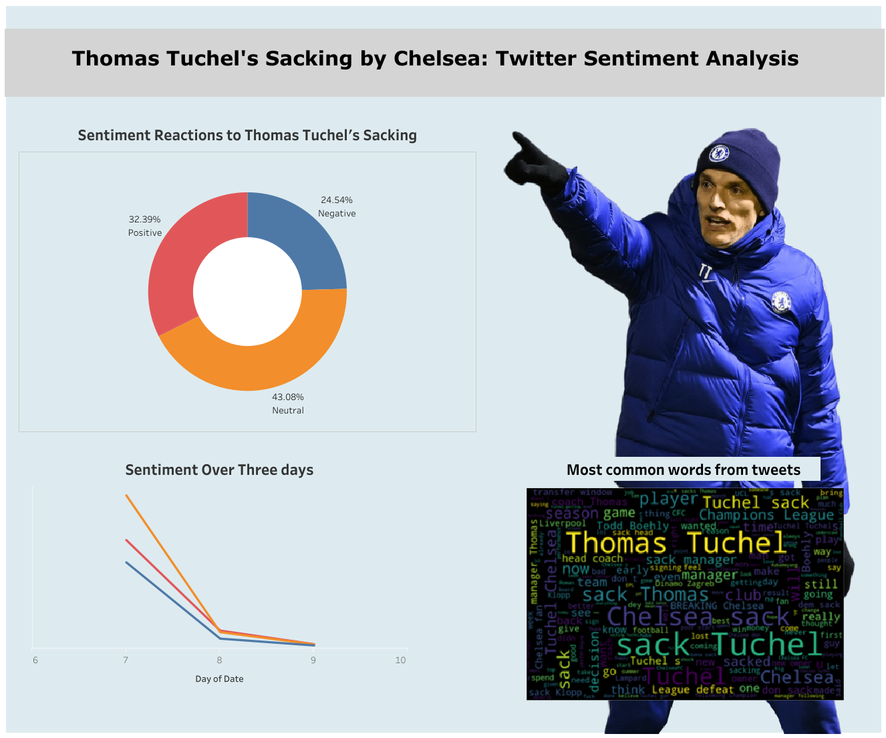
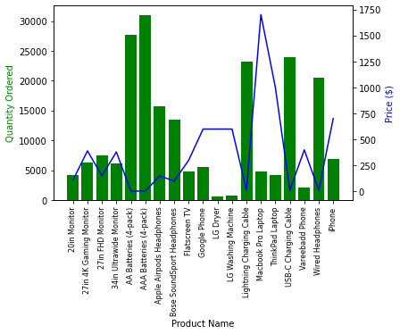
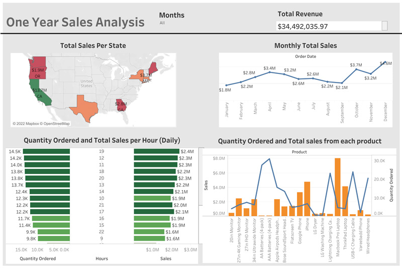

Water is the most important resource for life, essential for the survival of most existing creatures and humans.
Living organisms require sufficient quality water to survive. There are some pollution levels that water species can tolerate.
Exceeding these restrictions has an impact on these organisms' existence and risks their life.
Access to clean drinking water is critical to health, a basic human right, and a component of any health-protection strategy.
This Project, therefore, is to predict if water is potable based on some water quality parameters

Chelsea sacking Thomas Tuchel on the 7th of September 2022 came as a huge shock to football lovers. Everyone thought, ohh,
Chelsea now have a new owner and they will definitely support their coach who won them the UEFA Champions league less than a year ago.
I decided to check the reaction of people of twitter. You can check the result of my sentiment analysis in my notebooks.

In this project, I used Python Pandas and Python Matplotlib to evaluate and answer business questions concerning sales data from the previous 12 months.
Hundreds of thousands of electronics shop transactions are split out by month, product kind, pricing, purchase address, and so on.

Tableau Public was used to build a dashboard for the 12 months of sales data.
It is an interactive visual that can be used to filter the data based on various parameters.

This is a project to predict if news headline is sarcastic or not.
I worked on a dataset containing news headlines that are intended to be written sarcastically by the news author.
The aim here is to train NLP models to determine whether or not the headline is sarcastic.